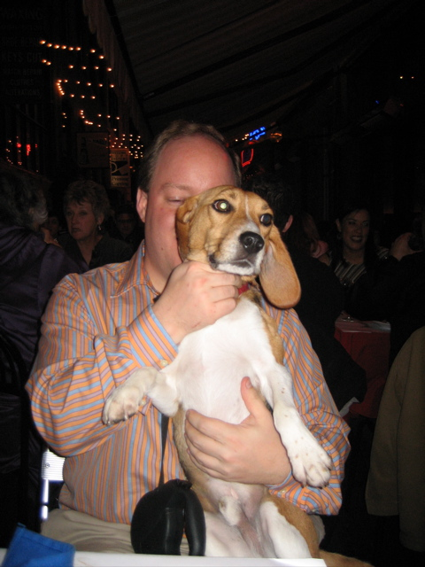

<--Previous Up Next-->

Plouf
We dined Friday at Plouf on Belden Place, an alley lined with restaurants with sidewalk tables. The mussels, Arctic char and Vouvray were excellent. Huxley enjoyed the dinner, but not so much that he didn't escape to check out what they were having two restaurants over. Here he is after being recaptured.